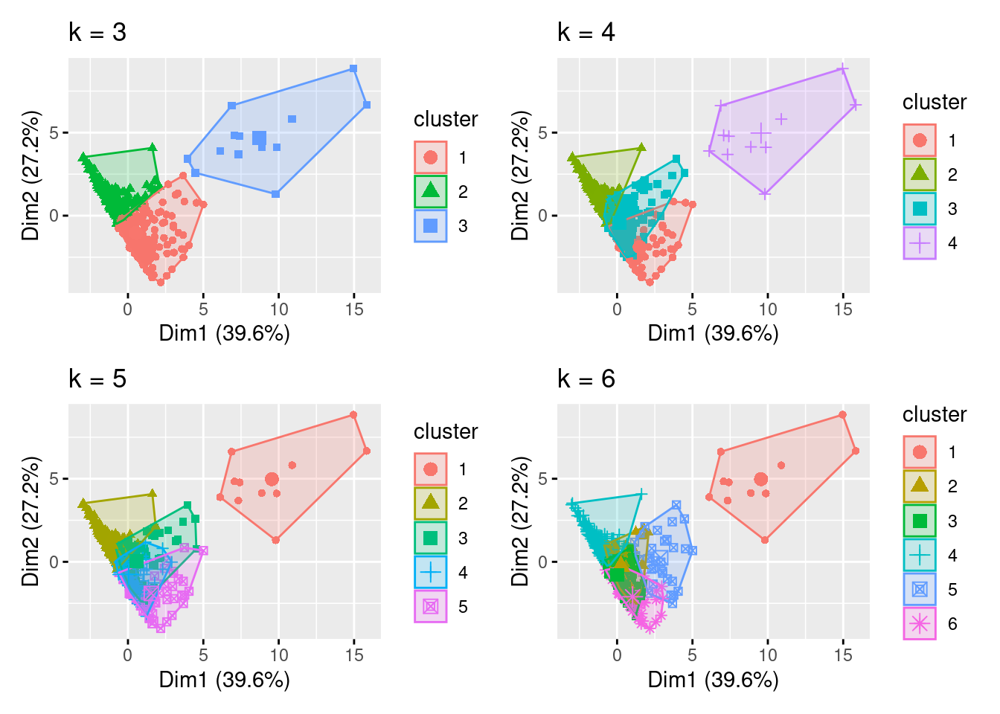
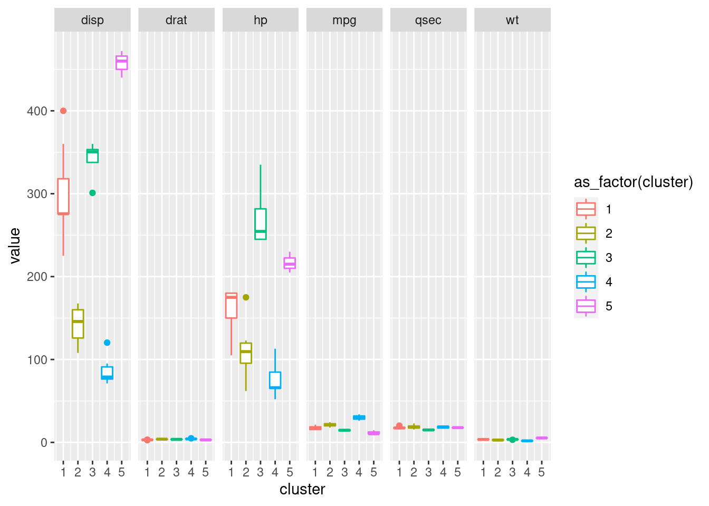
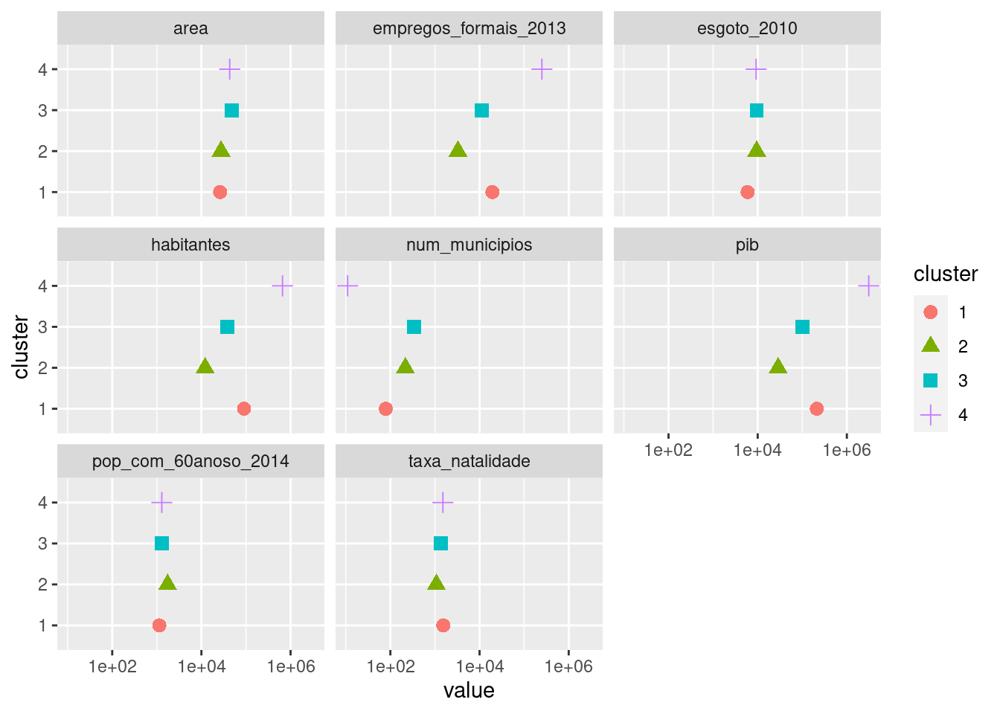
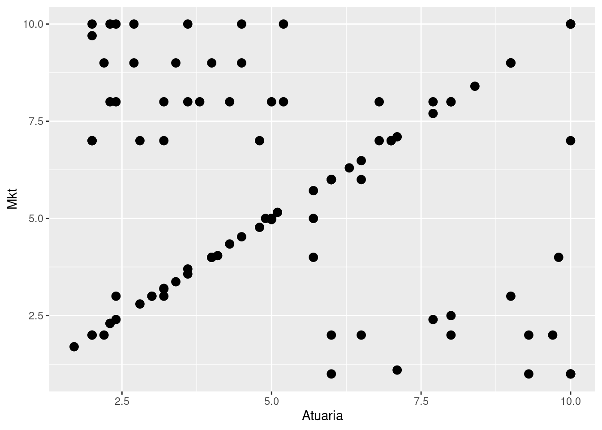
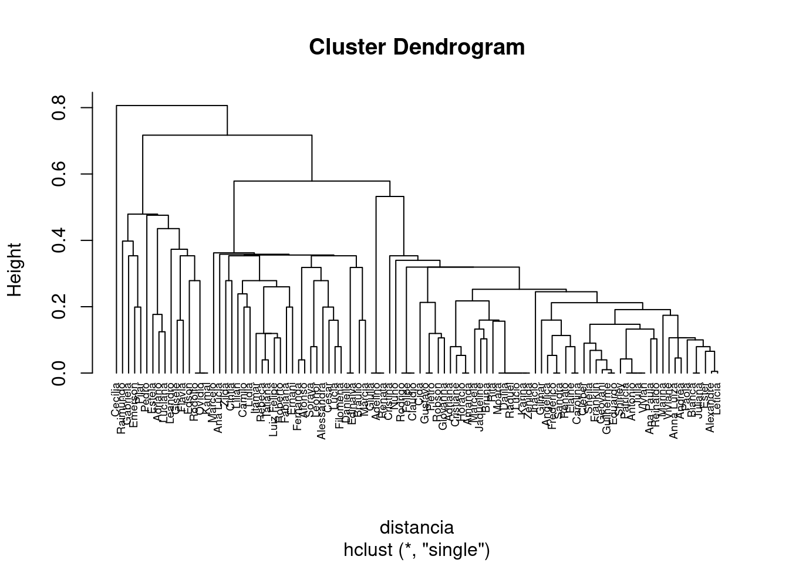
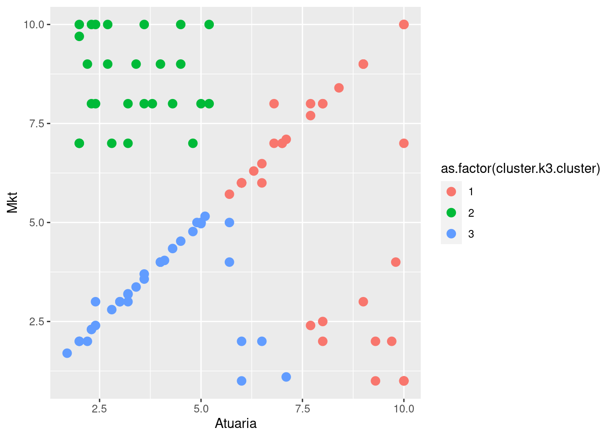
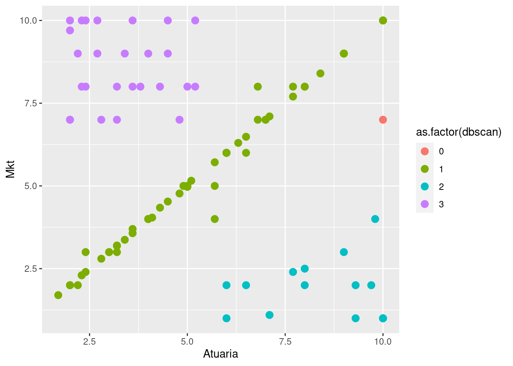

library(tidyverse)
library(cluster)
library (janitor)
library(factoextra)
library (patchwork)
library (readxl)
library (fpc)Não Supervisionado - Cluster
K-Means
Testes com analise de Cluster (Não Supervisionado)
Carregar a base
municipios <- read_delim("dados/municipios.csv",
delim = ";", escape_double = FALSE, locale =
locale(date_names = "pt",
encoding = "ISO-8859-1"),
trim_ws = TRUE)#Excluindo a cidade de SP:
municipios <- municipios |>
filter (str_detect(.data$Município, "São Paulo", negate = TRUE)) |>
clean_names() |>
column_to_rownames(var = "municipio") Padronizar (Z scale)
municipios.padronizado <- scale(municipios)Criar alguns clusters
municipios.k3 <- kmeans(municipios.padronizado, centers = 3)
municipios.k4 <- kmeans(municipios.padronizado, centers = 4)
municipios.k5 <- kmeans(municipios.padronizado, centers = 5)
municipios.k6 <- kmeans(municipios.padronizado, centers = 6)Graficos
G1 <- fviz_cluster(municipios.k3, geom = "point", data = municipios.padronizado) + ggtitle("k = 3")
G2 <- fviz_cluster(municipios.k4, geom = "point", data = municipios.padronizado) + ggtitle("k = 4")
G3 <- fviz_cluster(municipios.k5, geom = "point", data = municipios.padronizado) + ggtitle("k = 5")
G4 <- fviz_cluster(municipios.k6, geom = "point", data = municipios.padronizado) + ggtitle("k = 6")Criar uma matriz com 4 graficos
G1 + G2 + G3 + G4
Método Elbow
fviz_nbclust(municipios.padronizado, FUN = hcut, method = "wss")
Juntando dados
municipios2 <- read_delim("dados/municipios.csv",
delim = ";", escape_double = FALSE, locale =
locale(date_names = "pt",
encoding = "ISO-8859-1"),
trim_ws = TRUE)municipios2 <- municipios2 |>
filter (str_detect(.data$Município, "São Paulo", negate = TRUE)) |>
clean_names() |>
column_to_rownames(var = "municipio") #Escolhido K = 4
municipiosfit <- data.frame(municipios.k4$cluster)Agrupar cluster e base
MunicipioFinal <- bind_cols(municipios2, municipiosfit) |>
rename(cluster = last_col())
MunicipioFinal_EDA <- MunicipioFinal |>
group_by(cluster) |>
summarise(num_municipios = n(),
across(c(2:8), ~mean(.x, na.rm = TRUE))) Plot final EDA
MunicipioFinal_EDA |>
pivot_longer(!cluster) |>
mutate(cluster = as_factor(cluster)) |>
ggplot(aes(cluster, value, shape = cluster, color = cluster)) +
geom_point(size = 3) +
scale_y_log10() +
coord_flip() +
guides(size = "none") +
facet_wrap(vars(name)) 
DBSCAN
#Comparando todos os métodos com dbscan ########################################
Carregar base de dados:
notas_categ <- as.data.frame(read_excel("dados/notas_categ.xlsx"))########################################
#
# Brincando e comparando todos os métodos com dbscan
#
########################################
#Carregar base de dados:
notas_categ <- as.data.frame(read_excel("dados/notas_categ.xlsx"))
#pegando os dados que usaremos
notas_alunos <- notas_categ |>
select(Estudante, Atuaria, Mkt)
#para visualizar no plano
notas_alunos |> ggplot() +
geom_point(aes(x = Atuaria,
y = Mkt),
size = 3)
#Transformar o nome
rownames(notas_alunos) <- notas_alunos[,1]
notas_alunos <- notas_alunos[,-1]
#Padronizar variaveis
notas_alunos_pad <- scale(notas_alunos)
#calcular as distancias da matriz utilizando a distancia euclidiana
distancia <- dist(notas_alunos_pad, method = "euclidean")
### método hiearquico
#Calcular o Cluster
cluster.hierarquico <- hclust(distancia, method = "single" )
# Dendrograma
plot(cluster.hierarquico, cex = 0.6, hang = -1)
#criando grupos
grupo_alunos_hierarquico <- cutree(cluster.hierarquico, k = 3)
table(grupo_alunos_hierarquico)grupo_alunos_hierarquico
1 2 3
84 1 15 #transformando em data frame a saida do cluster
grupo_alunos_hierarquico <- data.frame(grupo_alunos_hierarquico)
#juntando com a base original
notas_alunos_fim <- cbind(notas_alunos, grupo_alunos_hierarquico)
#visualizando em cores os clusters
notas_alunos_fim |> ggplot() +
geom_point(aes(x = Atuaria,
y = Mkt,
color = as.factor(grupo_alunos_hierarquico)),
size = 3)
### método k-means
#Calcular o Cluster
cluster.k3 <- kmeans(notas_alunos_pad, centers = 3)
#criando grupos
grupo_alunos_kmeans3 <- data.frame(cluster.k3$cluster)
#juntando com a base original
notas_alunos_fim <- cbind(notas_alunos_fim, grupo_alunos_kmeans3)
#visualizando em cores os clusters
notas_alunos_fim |> ggplot() +
geom_point(aes(x = Atuaria,
y = Mkt,
color = as.factor(cluster.k3.cluster)),
size = 3)
### método dbscan
#Calcular o Cluster
dbscan <- fpc::dbscan(notas_alunos_pad,eps = 0.56, MinPts = 3)
notas_alunos_fim$dbscan <- dbscan$cluster
#visualizando em cores os clusters
notas_alunos_fim |> ggplot() +
geom_point(aes(x = Atuaria,
y = Mkt,
color = as.factor(dbscan)),
size = 3)